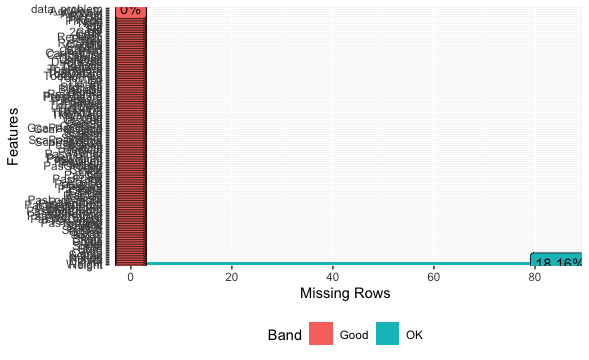
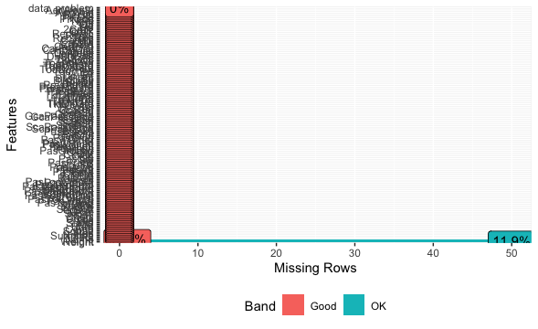
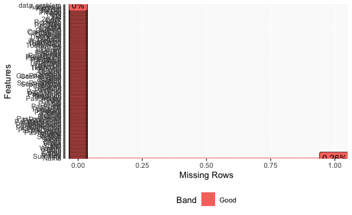
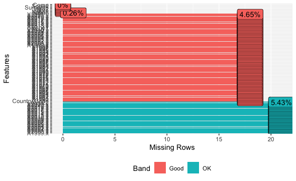
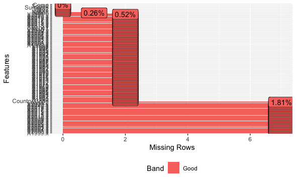

| Variables | Meaning |
|---|---|
| Rk | Rank |
| Player | Player name |
| Nation | Player nation |
| Pos | Position |
| Squad | Squad’s name |
| Comp | League that squad occupies |
| Age | Player age |
| Born | Year of birth |
| MP | Matches played |
| Starts | Matches started |
| Min | Minutes played |
| 90s | Minutes played divided by 90 |
| Goals | Goals scored or allowed |
| Shots | Shots total (Does not include penalty kicks) |
| SoT | Shots on target (Does not include penalty kicks) |
| SoT% | Shots on target percentage (Does not include penalty kicks) |
| G/Sh | Goals per shot |
| G/SoT | Goals per shot on target (Does not include penalty kicks) |
| ShoDist | Average distance, in yards, from goal of all shots taken (Does not include penalty kicks) |
| ShoFK | Shots from free kicks |
| ShoPK | Penalty kicks made |
| PKatt | Penalty kicks attempted |
| PasTotCmp | Passes completed |
| PasTotAtt | Passes attempted |
| PasTotCmp% | Pass completion percentage |
| PasTotDist | Total distance, in yards, that completed passes have traveled in any direction |
| PasTotPrgDist | Total distance, in yards, that completed passes have traveled towards the opponent goal |
| PasShoCmp | Passes completed (Passes between 5 and 15 yards) |
| PasShoAtt | Passes attempted (Passes between 5 and 15 yards) |
| PasShoCmp% | Pass completion percentage (Passes between 5 and 15 yards) |
| PasMedCmp | Passes completed (Passes between 15 and 30 yards) |
| PasMedAtt | Passes attempted (Passes between 15 and 30 yards) |
| PasMedCmp% | Pass completion percentage (Passes between 15 and 30 yards) |
| PasLonCmp | Passes completed (Passes longer than 30 yards) |
| PasLonAtt | Passes attempted (Passes longer than 30 yards) |
| PasLonCmp% | Pass completion percentage (Passes longer than 30 yards) |
| Assists | Assists |
| PasAss | Passes that directly lead to a shot (assisted shots) |
| Pas3rd | Completed passes that enter the 1/3 of the pitch closest to the goal |
| PPA | Completed passes into the 18-yard box |
| CrsPA | Completed crosses into the 18-yard box |
| PasProg | Completed passes that move the ball towards the opponent goal at least 10 yards from its furthest point in the last six passes, or any completed pass into the penalty area |
| PasAtt | Passes attempted |
| PasLive | Live-ball passes |
| PasDead | Dead-ball passes |
| PasFK | Passes attempted from free kicks |
| TB | Completed pass sent between back defenders into open space |
| PasPress | Passes made while under pressure from opponent |
| Sw | Passes that travel more than 40 yards of the width of the pitch |
| PasCrs | Crosses |
| CK | Corner kicks |
| CkIn | Inswinging corner kicks |
| CkOut | Outswinging corner kicks |
| CkStr | Straight corner kicks |
| PasGround | Ground passes |
| PasLow | Passes that leave the ground, but stay below shoulder-level |
| PasHigh | Passes that are above shoulder-level at the peak height |
| PaswLeft | Passes attempted using left foot |
| PaswRight | Passes attempted using right foot |
| PaswHead | Passes attempted using head |
| TI | Throw-Ins taken |
| PaswOther | Passes attempted using body parts other than the player head or feet |
| PasCmp | Passes completed |
| PasOff | Offsides |
| PasOut | Out of bounds |
| PasInt | Intercepted |
| PasBlocks | Blocked by the opponent who was standing in its path |
| SCA | Shot-creating actions |
| ScaPassLive | Completed live-ball passes that lead to a shot attempt |
| ScaPassDead | Completed dead-ball passes that lead to a shot attempt |
| ScaDrib | Successful dribbles that lead to a shot attempt |
| ScaSh | Shots that lead to another shot attempt |
| ScaFld | Fouls drawn that lead to a shot attempt |
| ScaDef | Defensive actions that lead to a shot attempt |
| GCA | Goal-creating actions |
| GcaPassLive | Completed live-ball passes that lead to a goal |
| GcaPassDead | Completed dead-ball passes that lead to a goal |
| GcaDrib | Successful dribbles that lead to a goal |
| GcaSh | Shots that lead to another goal-scoring shot |
| GcaFld | Fouls drawn that lead to a goal |
| GcaDef | Defensive actions that lead to a goal |
| Tkl | Number of players tackled |
| TklWon | Tackles in which the tackler team won possession of the ball |
| TklDef3rd | Tackles in defensive 1/3 |
| TklMid3rd | Tackles in middle 1/3 |
| TklAtt3rd | Tackles in attacking 1/3 |
| TklDri | Number of dribblers tackled |
| TlDriAtt | Number of times dribbled past plus number of tackles |
| TklDri% | Percentage of dribblers tackled |
| TklDriPast | Number of times dribbled past by an opposing player |
| Press | Number of times applying pressure to opposing player who is receiving, carrying or releasing the ball |
| PresSucc | Number of times the squad gained possession within five seconds of applying pressure |
| Press% | Percentage of time the squad gained possession within five seconds of applying pressure |
| PresDef3rd | Number of times applying pressure to opposing player who is receiving, carrying or releasing the ball, in the defensive 1/3 |
| PresMid3rd | Number of times applying pressure to opposing player who is receiving, carrying or releasing the ball, in the middle 1/3 |
| PresAtt3rd | Number of times applying pressure to opposing player who is receiving, carrying or releasing the ball, in the attacking 1/3 |
| Blocks | Number of times blocking the ball by standing in its path |
| BlkSh | Number of times blocking a shot by standing in its path |
| BlkShSv | Number of times blocking a shot that was on target, by standing in its path |
| BlkPass | Number of times blocking a pass by standing in its path |
| Int | Interceptions |
| Tkl+Int | Number of players tackled plus number of interceptions |
| Clr | Clearances |
| Err | Mistakes leading to an opponent shot |
| Touches | Number of times a player touched the ball. Note: Receiving a pass, then dribbling, then sending a pass counts as one touch |
| TouDefPen | Touches in defensive penalty area |
| TouDef3rd | Touches in defensive 1/3 |
| TouMid3rd | Touches in middle 1/3 |
| TouAtt3rd | Touches in attacking 1/3 |
| TouAttPen | Touches in attacking penalty area |
| TouLive | Live-ball touches. Does not include corner kicks, free kicks, throw-ins, kick-offs, goal kicks or penalty kicks. |
| DriSucc | Dribbles completed successfully |
| DriAtt | Dribbles attempted |
| DriSucc% | Percentage of dribbles completed successfully |
| DriPast | Number of players dribbled past |
| DriMegs | Number of times a player dribbled the ball through an opposing player legs |
| Carries | Number of times the player controlled the ball with their feet |
| CarTotDist | Total distance, in yards, a player moved the ball while controlling it with their feet, in any direction |
| CarPrgDist | Total distance, in yards, a player moved the ball while controlling it with their feet towards the opponent goal |
| CarProg | Carries that move the ball towards the opponent goal at least 5 yards, or any carry into the penalty area |
| Car3rd | Carries that enter the 1/3 of the pitch closest to the goal |
| CPA | Carries into the 18-yard box |
| CarMis | Number of times a player failed when attempting to gain control of a ball |
| CarDis | Number of times a player loses control of the ball after being tackled by an opposing player |
| RecTarg | Number of times a player was the target of an attempted pass |
| Rec | Number of times a player successfully received a pass |
| Rec% | Percentage of time a player successfully received a pass |
| RecProg | Completed passes that move the ball towards the opponent goal at least 10 yards from its furthest point in the last six passes, or any completed pass into the penalty area |
| CrdY | Yellow cards |
| CrdR | Red cards |
| 2CrdY | Second yellow card |
| Fls | Fouls committed |
| Fld | Fouls drawn |
| Off | Offsides |
| Crs | Crosses |
| TklW | Tackles in which the tackler team won possession of the ball |
| PKwon | Penalty kicks won |
| PKcon | Penalty kicks conceded |
| OG | Own goals |
| Recov | Number of loose balls recovered |
| AerWon | Aerials won |
| AerLost | Aerials lost |
| AerWon% | Percentage of aerials won |
2 Data
2.1 Raw datasets
2.1.1 Kaggle : football player stats 2021-2022
Ex : This is the dataset where we get the majority of our information for our analysis
--> Basis for clean ds
--> we will use the data : ….
-->
Source : https://www.kaggle.com/datasets/vivovinco/20212022-football-player-stats
2.1.2 Fifa.csv
Ex : Used to complete informations –> height, weight
--> other offensive infos
| Variables | Meaning |
|---|---|
| id | Unique identifier for a player |
| Fullname | Full name of the player |
| current_rating | Players current skill rating or performance level |
| potential_rating | Expected potential skill level or rating a player can achieve |
| height | Player's height |
| weight | Player's weight |
| preferred_foot | Player's preferred foot for kicking (left or right) |
| birth_date | Player's date of birth |
| preferred_positions | Positions on the field the player prefers to play |
| work_rate | Player's work rate or level of effort during matches |
| weak_foot | Player's weaker foot rating or ability |
| skill_moves | Player's skill move rating or ability to perform technical moves |
| value | Player's estimated market value |
| wage | Player's salary or wage |
| ball_control | Player's skill in controlling the ball |
| dribbling | Player's dribbling ability |
| marking | Player's defensive marking ability |
| tackling | Player's ability to perform tackles |
| aggression | Player's level of aggression on the field |
| composure | Player's composure under pressure |
| reaction | Player's reaction time |
| crossing | Player's ability to cross the ball into the box |
| short_pass | Player's accuracy in short passes |
| long_pass | Player's accuracy in long passes |
| acceleration | Player's acceleration |
| stamina | Player's stamina or endurance |
| strength | Player's physical strength |
| spring_speed | Player's sprinting speed |
| heading | Player's heading ability |
| shot_power | Player's power in shooting |
| finishing | Player's ability to finish goal-scoring opportunities |
| long_shots | Player's ability to take long-range shots |
| FK_Acc. | Player's accuracy in free kicks |
| reflexes | Goalkeeper's reflexes |
| handling | Goalkeeper's handling ability |
| gk_positioning | Goalkeeper's positioning on the field |
| gk_diving | Goalkeeper's diving ability |
Source : https://www.kaggle.com/datasets/daguizer/fifa-2021-to-2005-complete-player-attributes
2.1.3 Ballon D’or-Golden Ball Winners
Ex : From this data set we extracted some of the info for …..
| Variables | Meaning |
|---|---|
| Year | Year of assignment |
| Rank | winner,second,third |
| Player | Player first and last Name |
| Country | Country of birth/acquired citizenship |
| Team | Football team at the time the prize was assigned |
| Points | Score obtained |
| Source | Source of the data |
2.1.4 FIFA Players & Stats
Ex :
| Variables | Meaning |
|---|---|
| ID | Unique identifier for the player |
| Name | Player's name |
| Natinality | Player's nationality |
| Overal | Player's overall skill rating |
| Potential | Player's potential skill rating |
| Height | Player's height |
| Weight | Player's weight |
| PreferredFoot | Player's preferred foot for kicking (left or right) |
| BirthDate | Player's date of birth |
| Age | Player's current age |
| PreferredPositions | Positions on the field preferred by the player |
| PlayerWorkRate | Player's work rate or effort during matches |
| WeakFoot | Player's weaker foot rating or ability |
| SkillMoves | Player's skill move rating or ability to perform technical moves |
| Value | Player's estimated market value |
| Wage | Player's salary or wage |
| Nation | Player's nation |
| Nation_Position | Player's position within the national team |
| Nation_KitNumber | Player's kit number in the national team |
| Club | Player's club |
| Club_Position | Player's position within the club team |
| Club_KitNumber | Player's kit number in the club team |
| Club_JoinedClub | Date when the player joined the club |
| Club_ContractLength | Length of the player's contract with the club |
| BallControl | Player's skill in controlling the ball |
| Dribbling | Player's dribbling ability |
| Marking | Player's marking ability |
| SlideTackle | Player's sliding tackle ability |
| StandTackle | Player's standing tackle ability |
| Aggression | Player's level of aggression on the field |
| Reactions | Player's reaction time |
| AttPosition | Player's positioning for attacks |
| Interceptions | Player's ability to intercept passes |
| Vision | Player's vision on the field |
| Composure | Player's composure under pressure |
| Crossing | Player's ability to cross the ball into the box |
| ShortPass | Player's accuracy in short passes |
| LongPass | Player's accuracy in long passes |
| Acceleration | Player's acceleration |
| Stamina | Player's stamina or endurance |
| Strength | Player's physical strength |
| Balance | Player's balance on the field |
| SprintSpeed | Player's sprinting speed |
| Agility | Player's agility |
| Jumping | Player's jumping ability |
| Heading | Player's heading ability |
| ShotPower | Player's power in shooting |
| Finishing | Player's ability to finish goal-scoring opportunities |
| LongShots | Player's ability to take long-range shots |
| Curve | Player's ability to curve the ball |
| FKAcc | Player's accuracy in free kicks |
| Penalties | Player's penalty-taking ability |
| Volleys | Player's ability to hit volleys |
| GKPositioning | Goalkeeper's positioning on the field |
| GKDiving | Goalkeeper's diving ability |
| GKHandling | Goalkeeper's handling ability |
| GKKicking | Goalkeeper's kicking ability |
| GKReflexes | Goalkeeper's reflexes |
| Traits | Special traits associated with the player |
| Specialities | Special abilities or skills the player possesses |
Source : https://www.kaggle.com/datasets/justdhia/fifa-players?select=2021.csv
2.1.5 World Population Dataset
Ex :
| Variables | Meaning |
|---|---|
| Rank | Rank by Population |
| CCA3 | 3 Digit Country/Territories Code |
| Country/Territory | Name of the Country/Territories |
| Capital | Name of the Capital |
| Continent | Name of the Continent |
| 2022 Population | Population of the Country/Territories in the year 2022 |
| 2020 Population | Population of the Country/Territories in the year 2020 |
| 2015 Population | Population of the Country/Territories in the year 2015 |
| 2010 Population | Population of the Country/Territories in the year 2010 |
| 2000 Population | Population of the Country/Territories in the year 2000 |
| 1990 Population | Population of the Country/Territories in the year 1990 |
| 1980 Population | Population of the Country/Territories in the year 1980 |
| 1970 Population | Population of the Country/Territories in the year 1970 |
| Area (km²) | Area size of the Country/Territories in square kilometer |
| Density (per km²) | Population Density per square kilometer |
| Growth Rate | Population Growth Rate by Country/Territories |
| World Population Percentage | The population percentage by each Country/Territories |
Source : https://www.kaggle.com/datasets/iamsouravbanerjee/world-population-dataset
2.1.6 GDP By Country 1999 - 2022
Ex : This is a dataset from Kaggle that contains the GDP by country for different countries it will be used to do analysis on the link of a nation’s wealth and the skills of a player.
| Variables | Meaning |
|---|---|
| Country | Name of the country |
| 1999 | Population in 1999 |
| 2000 | Population in 2000 |
| 2001 | Population in 2001 |
| 2002 | Population in 2002 |
| 2003 | Population in 2003 |
| 2004 | Population in 2004 |
| 2005 | Population in 2005 |
| 2006 | Population in 2006 |
| 2007 | Population in 2007 |
| 2008 | Population in 2008 |
| 2009 | Population in 2009 |
| 2010 | Population in 2010 |
| 2012 | Population in 2012 |
| 2013 | Population in 2013 |
| 2014 | Population in 2014 |
| 2015 | Population in 2015 |
| 2016 | Population in 2016 |
| 2017 | Population in 2017 |
| 2018 | Population in 2018 |
| 2019 | Population in 2019 |
| 2020 | Population in 2020 |
| 2021 | Population in 2021 |
| 2022 | Population in 2022 |
Source : https://www.kaggle.com/code/alejopaullier/gdp-by-country-1999-2022
2.1.7 Revenue of the Big Five soccer leagues in Europe from 2012/13 to 2021/22, with a forecast to 2023/24, by league
Ex : Dataset done from a webpage on statista that forecasts the revenue of the five biggest leagues from 2012 to 2022.
| Variables | Meaning |
|---|---|
| Date | Date |
| Bundesliga | revenue Bundesliga |
| LaLiga | revenue La Liga |
| SerieA | revenue Serie A |
| Ligue1 | revenue Ligue 1 |
| Premierleague | revenue Premier league |
Source : https://www.statista.com/statistics/261218/big-five-european-soccer-leagues-revenue/
2.1.8 : Revenue from broadcasting rights of European soccer leagues from in 2019/20
Ex : Dataset made from scratches from Statista to create our own db
| Variables | Meaning |
|---|---|
| country | country |
| revenue | revenue calculated in mio |
Source : https://www.statista.com/statistics/627306/broadcasting-big-five-european-football-league-revenues/
2.2 Data wrangling and cleaning
2.2.1 Ballon d’or winners clean
Now, it’s time to clean up the Ballon d’Or database. This was less difficult than the previous database, although it still required some work. The dplyr and readr libraries were used during this data wrangling exercise. First, we needed to filter our database to keep only the winners from the last 20 years. This choice was made to observe the evolution of 21st-century football. It’s important to note that there was no Ballon d’Or awarded in 2020, hence its absence. To do this, nothing was more efficient than using a filter() function.
Next, we encountered a naming issue with a certain player. For some reason, Luka Modrić was listed as ‘Croatia Luka Modric’ so it was necessary to rename him using the mutate() function in conjunction with ifelse().
Now, we could start adding new columns that would be useful for the project’s analysis. We aimed to add the following columns: Age, Height, Weight, PreferredFoot, and PreferredPositions.
To achieve this, we needed other databases to join the missing columns. We chose FIFA05 and FIFA21 databases because the oldest winners are not present in the most modern game. To maximize our chances of having the necessary variables, we opted for two databases. To join two databases, we needed a common key. The Player column was the most suitable, so we aligned this name in the other databases using the rename() function. Having a common key allowed us to merge the databases using the left_join() function. However, this resulted in numerous unnecessary columns in our database. Using the select() function, we retained only the necessary columns. This process will be repeated while writing the code.
New challenges arose. For the sake of our analysis, we needed new columns. Firstly, an Age column. We now had the birth date and wanted the age at the time of winning. As some players won multiple times, they needed different ages for each success. Therefore, retrieving age from other databases wasn’t feasible; we had to do it ourselves. We used the sub() function to extract the birth year and then, with mutate(), created the Age column by subtracting the birth year from the Ballon d’Or’s year.
Next, to replace missing values in our columns, we used a combination of $ and ifelse(is.na()) functions. $ was used to select the database and column we wanted to work on, while the latter function replaced missing values. Consequently, our columns were filled with values from the two external databases.
However, we encountered an issue with the player Kaka, who had missing values for some columns. As he was the only player with this problem, we manually created a Kaka_values <- c() containing the different characteristics and used this in an ifelse() function to replace the missing values.
Before finishing and selecting only the useful columns, we needed to standardize the PreferredFoot and PreferredPositions columns. PreferredFoot sometimes had values like R instead of Right, and PreferredPositions had ‘-’ instead of ‘/’. The ifelse() and gsub() functions were instrumental in this process.
Now, the Ballon d’Or database is cleaned up with the columns we intend to use for the analysis ahead.
| Variables | Meaning |
|---|---|
| Year | Birthdate of the player |
| Player | Name of the player |
| Country | Country of origin of the player |
| Team | Team of the player |
| Age | Age of the player |
| Height | Height of the player |
| Weight | Weight of the player |
| PreferredFoot | Preferred foot of the player |
| PreferredPositions | Preferred posiiton of the player |
2.2.2 Data of players clean
Cleaning up the database of player performances and statistics was a very complex task. Several types of problem arose, and we had to make choices and take initiatives for the rest of our analysis.
The dplyr, readr, stringr, tidyr and lubridate libraries were used during this data wrangling exercise.
Firstly, when we downloaded our database, a major problem appeared. As soon as a player or team name contained a special character such as an acute accent, the accent changed to ? and we realized that we had an encoding problem. To overcome this problem, we tested different encoding, in particular ‘UTF-8’, and others ‘ISO’, but the problem didn’t go away. In fact, some names ended up with the wrong accent. Nevertheless, we found that the ‘ISO-8859-1’ encoding was the most suitable, leaving us with a problem with Slavic and ex-Yugoslav family names in particular. We therefore tried to create a list of players with the remaining encoding problem.
Understanding that special characters were indeed very special for these players, we took the initiative of manually renaming certain players such as “Edin Džeko”, using the sub() function, and then using the gsub() function, we replaced the last ? with the letter ć, which was generally the letter most present in names with this problem. However, for some reason, the players “Dušan Vlahović” and “Nikola Vlašić” had spaces instead of the letter “š”, so we had to use another method to rename them. We used the ifelse() function, and as it wasn’t possible to rename them using the basic written name, we had to use another common key: Rk.
It was important first to explain how we renamed our players and teams in the first place, as this was a major problem. However, before beginning the steps above, we first sorted the database a little. First of all, we had duplicate players because, as our database covers an entire season, it’s quite normal to have transfers in mid-season, which explains the presence of duplicate players with different characteristics such as the club. The distinct() function allows us to remove duplicates.
Next, we had to filter the database for various reasons. For the rest of our analysis, certain columns will be important, such as the Goals column. However, when we were still getting to know our database, we noticed that this column produced some surprising results. In fact, this column represents the number of goals per 90 minutes, but some players had crazy statistics. Pablo Sarabia, for example, scored 5 goals every 90 minutes. The problem was that Sarabia hadn’t played many minutes (22). We therefore realized that players who had been effective but had played few minutes would have disproportionately high statistics, because their statistics would then be weighted against the 90 minutes that our database covers.
So, using the filter() function, we took the initiative of only keeping players who had played at least 9 matches (MP >= 9) and who had played at least 405 minutes (Min >= 405). This choice was made because we assumed that our players had to have played at least half the matches in half a season, because as we said, some players were transferred during the middle of the season. Moreover, in terms of minutes, we wanted them to have played at least one half of the 9 matches they played (45 minutes), and by multiplying that by the number of matches, we arrived at our figures. Thus, we only want to keep the attacking players, so those whose positions begin with the letter ‘F’ for Forward.
Now that the database has been filtered, we are missing two columns for the rest of our project: Height and Weight. To do this, we decided to take a database from the FIFA21 game, the year of our statistics, which had the missing characteristics. However, here too we encountered a number of problems.

Firstly, we needed a common key to join the two databases. To do this, rename() allowed us to rename Name to Player and then, thanks to left_join(), the two databases were joined. Now we needed to see which players didn’t have values for Height and Weight, so we created a height_na list using filter(is.na()). So 85 players had missing values. For a start, we could have players who simply didn’t have the same spelling, for example Sehrou/Serhou Guirassy depending on the database. Then there was the fact that the FIFA21 database had full names, meaning that some players had their 2nd and 3rd first names included, something that was not in our database. Finally, there were some players who simply didn’t appear in the game.
To overcome these problems, we tried various solutions. The one we kept was to separate the Player column into Surname and Name, using separate(), in order to be able to search and fill in via the Name common key. The problem with this solution was that we now had duplicates that we had to remove. This solution enabled us to reduce the number of missing values to 50.

A final attempt was to use several common keys at the same time. To do this, we needed the year of birth and the team in which the player plays. Once we had made sure we had these common keys, a new left_join() with a by = c(“Born”, “Squad”) inside was used, and we could try to fill in the missing NAs. This choice of common keys was made on the assumption that if we only had strikers, it was quite possible that the strikers in the same team would differ in age, which would help us to maximize our chances of replacements. That’s how we got down to 38 values.
However, we realized that it would be too complex to find the last missing values. So we stopped and looked at our height_na and realized that most of these players via the Goals column would not interest us for the rest of our analysis. We therefore took the initiative of manually replacing the Height and Weight of the best player from the Goals column for each of the 5 leagues, using mutate(), in order to keep players who might be of interest to us for the analysis. For the rest of the players, we decided to remove them from our database using filter(!is.na()).
It was now necessary to re-join Surname and Name as Player to avoid NAs filling up in one of the columns because of Brazilian players, for example, who are only called by their name.
Before concluding, you should know that in our analysis we want to compare the statistical and physical trends between the different leagues. So, to finish with this database, we wanted to create 5 different databases in order to have the players in each league, and to do this we had to create “comp_players” using the filter() function. We now have the databases we need to approach the various remaining stages of this project.

| Variables | Meaning |
|---|---|
| Rk | Rank of the player |
| Player | Player's name |
| Nation | Player's nation |
| Pos | Position |
| Squad | Squad's name |
| Comp | League that squad occupies |
| Born | Year of birth |
| Mp | Matches played |
| Min | Minutes played |
| Goals | Goals scored or allowed |
| SoT% | Shots on target percentage (Does not include penalty kicks) |
| G/Sh | Goals per shot |
| ShoDist | Average distance, in yards, from goal of all shots taken (Does not include penalty kicks) |
| PasTotAtt | Passes attempted |
| PasTotCmp% | Pass completion percentage |
| Assists | Assists |
| PPA | Completed passes into the 18-yard box |
| CrsPA | Completed crosses into the 18-yard box |
| SCA | Shot-creating actions |
| GCA | Goal-creating actions |
| GcaDrib | Successful dribbles that lead to a goal |
| Press% | Percentage of time the squad gained possession withing five seconds of applying pressure |
| DriAtt | Dribbles attempted |
| DriSucc% | Percentage of dribbles completed successfully |
| Fld | Fouls drawn |
| AERwon% | Percentage of aerials won |
| Height | Height of the player |
| Weight | Weight of the player |
2.2.3 Data leagues clean
ex :
This database was created from multible tibbles created from statista since this information was not easily accessible as a csv file. The first tibble contains the revenue of the big 5 leagues from 2012 to 2024 and the second one is the revenu of tv rights broadcast of those big 5 leagues for the period 2021-2022.
The second step was to merge those tibbles to the chosen info of our database called data1 that contains cleaned data of the players chosen for our analysis, to do so we wanted to use the left_join function with “comp” as a similar key, the problem was that in the merged database we wanted the dates as headers and the leagues as values for the “comp” column as it was the opposite for one of the tibbles.To resolve this problem we transposed the data base “Pibcomp” so it could fit in the merged database. Now that the problem was finished we used left join and used the function select and everything while joining data1 to not clog the database with useless info and better the readability.
| Variables | Meaning |
|---|---|
| Comp | League's name |
| surname | Surname of player |
| Name | Name of player |
| Nation | country code |
| squad | team's name |
| TV_Revenue_in_Mio | Tv revenue of league |
| 2012-2013 | The revenue of the league for 2012-2013 |
| 2013-2014 | The revenue of the league for 2013-2014 |
| 2014-2015 | The revenue of the league for 2014-2015 |
| 2015-2016 | The revenue of the league for 2015-2016 |
| 2016-2017 | The revenue of the league for 2016-2017 |
| 2017-2018 | The revenue of the league for 2017-2018 |
| 2018-2019 | The revenue of the league for 2018-2019 |
| 2019-2020 | The revenue of the league for 2019-2020 |
| 2020-2021 | The revenue of the league for 2020-2021 |
| 2021-2022 | The revenue of the league for 2021-2022 |
| 2022-2023 | The revenue of the league for 2022-2023 |
| 2023-2024 | The revenue of the league for 2023-2024 |
https://www.statista.com/statistics/261218/big-five-european-soccer-leagues-revenue/
2.2.4 Nation info for players clean
Ex : This database is the database linking informations about the players and of their country of origin like the evolution of the GDP or the demography.
The constituing database are data1 which is the cleaned database of players, World .csv which is the evolution of demography and gdp.csv which is the evolution of GDP. To merge those database we wanted to use left_join but with a similar pivot containing country codes. The problem was the following : GDP didn’t have any country code column but a “complete name” one .
To resolve the problem we created a custom list linking country codes to a “complete version” for example “ENG” was linked to “England”, we then joined this list to GDP by using the complete names as a pivot (here called abre) with the help of the function rename and left_pivot.
We then had to add the info of players ,the problem was the following : The two databases had different encoding for country codes so we tried to convert them using the countrycode package, problem was that the coding for data1 was a custom one probably used for the abbreviation of football teams not recognized by the package, so we first tried with the custom list . The listed matched in part but we had almost 30% of missing values so we had to improvise. We created a second list ( called abre2) that included the differences between the two lists added it to the data1 and linked the 3 databases together.

we searched for outliers with the function :
test <- test[, !names(test) %in% c("abre", "abre2","Country.Code")]
rows_with_na <- test[!complete.cases(test), ]
We had some outliers that we had to correct manually for example “England” had to be corrected to “United Kingdom” or Congo had to be corrected to “Congo, Democratic Republic of” or “Congo, Dem. Rep.” depending of the list .

Then we manually added the key info and dropped the rest to finally arrive to 0% of missing rows.
| Variables | Meaning |
|---|---|
| Nation | Country code |
| Surname | Surname of player |
| Name | Name of player |
| Squad | Squad of player |
| Comp | League of player |
| X1999.x | GDP in 1999 |
| X2000.x | GDP in 2000 |
| X2001.x | GDP in 2001 |
| X2002.x | GDP in 2002 |
| X2003.x | GDP in 2003 |
| X2004.x | GDP in 2004 |
| X2005.x | GDP in 2005 |
| X2006.x | GDP in 2006 |
| X2007.x | GDP in 2007 |
| X2008.x | GDP in 2008 |
| X2009.x | GDP in 2009 |
| X2010.x | GDP in 2010 |
| X2011.x | GDP in 2011 |
| X2012.x | GDP in 2012 |
| X2013.x | GDP in 2013 |
| X2014.x | GDP in 2014 |
| X2015.x | GDP in 2015 |
| X2016.x | GDP in 2016 |
| X2017.x | GDP in 2017 |
| X2018.x | GDP in 2018 |
| X2019.x | GDP in 2019 |
| X2020.x | GDP in 2020 |
| X2021.x | GDP in 2021 |
| x2022 | GDP in 2022 |
| X1960.x | Population of country in 1960 |
| X1961.x | Population of country in 1961 |
| X1962.x | Population of country in 1962 |
| X1963.x | Population of country in 1963 |
| X1964.x | Population of country in 1964 |
| X1965.x | Population of country in 1965 |
| X1966.x | Population of country in 1966 |
| X1967.x | Population of country in 1967 |
| X1968.x | Population of country in 1968 |
| X1969.x | Population of country in 1969 |
| X1970.x | Population of country in 1970 |
| X1971.x | Population of country in 1971 |
| X1972.x | Population of country in 1972 |
| X1973.x | Population of country in 1973 |
| X1974.x | Population of country in 1974 |
| X1975.x | Population of country in 1975 |
| X1976.x | Population of country in 1976 |
| X1977.x | Population of country in 1977 |
| X1978.x | Population of country in 1978 |
| X1979.x | Population of country in 1979 |
| X1980.x | Population of country in 1980 |
| X1981.x | Population of country in 1981 |
| X1982.x | Population of country in 1982 |
| X1983.x | Population of country in 1983 |
| X1984.x | Population of country in 1984 |
| X1985.x | Population of country in 1985 |
| X1986.x | Population of country in 1986 |
| X1987.x | Population of country in 1987 |
| X1988.x | Population of country in 1988 |
| X1989.x | Population of country in 1989 |
| X1990.x | Population of country in 1990 |
| X1991.x | Population of country in 1991 |
| X1992.x | Population of country in 1992 |
| X1993.x | Population of country in 1993 |
| X1994.x | Population of country in 1994 |
| X1995.x | Population of country in 1995 |
| X1996.x | Population of country in 1996 |
| X1997.x | Population of country in 1997 |
| X1998.x | Population of country in 1998 |
| X1999.x | Population of country in 1999 |
| X2000.x | Population of country in 2000 |
| X2001.x | Population of country in 2001 |
| X2002.x | Population of country in 2002 |
| X2003.x | Population of country in 2003 |
| X2004.x | Population of country in 2004 |
| X2005.x | Population of country in 2005 |
| X2006.x | Population of country in 2006 |
| X2007.x | Population of country in 2007 |
| X2008.x | Population of country in 2008 |
| X2009.x | Population of country in 2009 |
| X2010.x | Population of country in 2010 |
| X2011.x | Population of country in 2011 |
| X2012.x | Population of country in 2012 |
| X2013.x | Population of country in 2013 |
| X2014.x | Population of country in 2014 |
| X2015.x | Population of country in 2015 |
| X2016.x | Population of country in 2016 |
| X2017.x | Population of country in 2017 |
| X2018.x | Population of country in 2018 |
| X2019.x | Population of country in 2019 |
| X2020.x | Population of country in 2020 |
| X2021.x | Population of country in 2021 |
source : https://www.kaggle.com/datasets/iamsouravbanerjee/world-population-dataset
https://www.kaggle.com/code/alejopaullier/gdp-by-country-1999-2022